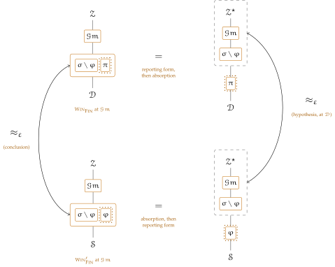

Emulation compares two systems. A property asks something of one: that no adversary win a game played against it — which Proposition 5.9 will reduce to the dummy’s not winning, the slot absorbing into the environment. Little new machinery is wanted for either. A game is a functionality like any other, the environment is the adversary that plays it, and the plumbing of the previous sections already settles who may call what — so a property is a system, an environment class, and an event, and the fields of Definition 1.1 do most of the work that a game’s rules do on paper. What has to be added is small, and is named as it comes: one hygiene condition on the game system, and the three conditions Section 4.4 already asks of anything it moves.
Definition 5.1 (Game, game system). A game for \(\F \) is a standard functionality \(\Gm \) with
carrying beside its own interfaces one or more finalizations: interfaces whose names begin with \(\op {Fin}\), a prefix reserved for them and borne by no other interface, each served at the root, each returning a bit, and no interface of \(\Gm \) — finalization or otherwise — served once any one of them has been. Here
is \(\serves \) with the root exempted. A game system is \(\gamma := \{\Gm \} \cup \sigma \) for a system \(\sigma \) containing \(\F \) and whatever \(\F \) uses and not containing \(\Gm \), with \(\WF (\gamma )\) and with \(\gamma \) tight at \(\{\Gm \}\) in the sense of Remark 6.5.
One game, then, may carry several properties: \(\op {FinCor}\) and \(\op {FinUF}\) over a signature functionality, say, sharing the oracles that record what was signed and differing only in the verdict read off them at the close. The environment chooses which to be judged on by choosing which finalization to call, and that choice is the last thing it does. So a game with several finalizations is not a conjunction of properties but a shell holding several, each with its own advantage below; an environment that maximizes one need not maximize another, and nothing here asks it to.
Game \(\Gm \) for \(\F \): the shell
\(\PID := (\Gm .F,0,0)\), \(\Ps := \F .\Ps \cup \{Z\}\), \(\admits := \Zpid \), \(\uses := \{(\F ,\serves _{\Gm })\}\), \(\pars := \none \)
\(\op {Initialize}()\):
\(\id .\op {Op}(in)\) from \(\id '\)
\(\id .\op {Leak}()\) from \(\id '\)
Finalizations of \(\Gm \), one per property; the shell for \(\F \) is shared
each named \(\op {Fin}\dots \), each served at the root, each closing the
game
\(\id .\opdef {Fin}()\) from \(\id '\) (the shape of every finalization)
\(\id .\op {FinCor}()\), \(\id .\op {FinUF}()\), … from \(\id '\)
Each field is forced, and it is worth saying by what.
The process id. There is one game per experiment, so the session and instance carry no information and we fix both at \(0\). Session \(0\) is not a convention but a requirement: the environment reaches \(\Gm \) by claiming its own \(Z\)-identity, which line 2 admits because \(\Zpid \subseteq \Gm .\admits \), and line 3 then asks \(\Gm .s = \Zenv .s = 0\) — \(\Gm \) not being global. Remark 7.17 is that observation in general. By Definition 1.3 a local \(\F \) shares the caller’s session, so the whole experiment sits in session \(0\), which is where the machines the execution supplies live too.
The served parties. A core claims only its own identity (line 5) and \(\opl {Guard}\) asks \(\id '.P = \id .P\), so \(\Gm \) at party \(P\) reaches \(\F \) at party \(P\) and at no other: the game exercises \(\F \) one party at a time, and the environment chooses the party by choosing which identity of \(\Gm \) to address, its root being free to act for any by line 3. Hence \(\F .\Ps \). The root is added for the finalizations, and the next paragraph says why.
The admitted callers. \(\Zpid \) and nothing else. Not \(\Stdpid \), which would make \(\Gm \) global and let any standard functionality finalize the game; not \(\Apid \), which would hand it to the adversary. With \(\Zpid \) alone, line 2 refuses every caller but the environment.
The name. Arbitrary, and Corollary 7.16 says so: renaming the game and \(\F .\admits \) together changes no probability, so a property proved against a game of one name holds against it under every other. This matters because line 5 lets the game claim only its own identity, so \(\F .\admits \) has to name the game while the \(\F \) that ships inside a protocol names that protocol; the corollary is what makes the two the same property. What is not arbitrary is the caller’s code, which no renaming touches.
The dependence. \(\serves _{\Gm }\) exempts the root because the root is the game’s own bookkeeping identity: \(\F \) need not serve a party the game never calls it at. A game whose verdict must query \(\F \) — verifying a claimed forgery, say — has two options, and they are the usual ones: record during the oracle calls whatever the verdict needs, or ask \(\F \) to serve the root as well, when \(\serves _{\Gm }\) becomes \(\serves \).
Tightness. The fields above do not suffice on their own, and the gap is Remark 6.5’s. An admissible environment is silenced on \(\ncl {\gamma }\), so it may claim no identity of a name \(\gamma \) uses — but Definition 4.10 forbids it only from hosting at identities \(\gamma \) occupies, and a hosted functionality is a full interface claiming its own identity through its own silencer (Definition 4.13). So an environment may host a machine at an unoccupied process id of a used name: at \((\Gm .F,0,1)\), say, an invented second instance of the game’s own name. A member of \(\sigma \) that admits its caller by name — the local pattern of Chapter 1 — admits that machine, and its calls pass every line of \(\opl {Guard}\): the name lies in \(\admits \), the parties agree, the sessions agree, and \(\opl {Mediate}\) does not fire at an honest party. The environment would then hold an oracle on \(\F \) that the game records nothing of, and \(\Pr [\Win _{\op {Fin}}] = 1\) for any game whose verdict is that the adversary produced something it was not given.
Tightness at \(\{\Gm \}\) refuses that, and refuses it completely. Every member but the game admits whole process ids the system occupies, so an invented instance fails line 2; and Remark 6.5’s party condition makes every identity a pinned caller could speak from occupied, where Definition 4.10 forbids hosting. The one route tightness leaves open — to a member of \(I\) itself, which here is the game — is closed by \(\Gm .\admits = \Zpid \): a hosted functionality is standard and claims a standard process id, which \(\Zpid \) excludes, while the environment’s own \(Z\)-identities are not hosted but its own. The game is thus the one member that may admit a bare class of process ids, and it is safe in doing so exactly because \(Z\) is no standard name.
Remark 5.2 (Why a finalization is served at the root). Party ids in \(\bits \) can be corrupted, and line 4 of the full interface hands a corrupt party’s call to the adversary before the core runs. A finalization served at such a party would therefore be answered by the adversary whenever that party is corrupt, and the answer to “have I won?” would be whatever the adversary says — Remark 3.1’s problem exactly, and no check inside the core can repair it, mediation happening in the wrapper above. The root is the fix, and the framework already supplies it: \(\fopl {Corrupt}\) asks \(\id .P \in \bits \), so \(Z\) never enters \(\Cs \), so \(\opl {Mediate}\) at \((\Gm .\PID ,Z)\) can never fire and the bit line 10 computes is always the game’s own. The reserved party ids were introduced to keep the three supplied machines honest; they keep the game honest at no extra cost. Line 8 then confines every finalization to that identity, so no other is a place to win.
Remark 5.3 (One finalization, once, and last). That exactly one finalization is answered, and that it is the last call the game answers, is enforced rather than assumed — and the one flag does both jobs. Line 9 sets a flag the wrapper cannot bypass, line 7 refuses every later finalization, its own name or another’s, and line 3 refuses every other interface thereafter; a refused require returns \(\rej \) by Section 3.6, so the environment learns that the game is closed and nothing else — at an honest party, at least. At a corrupt one line 4 intercepts before the core is entered, so the caller is answered by the adversary rather than refused; that changes nothing, the slot being unable to write the game’s state and the winning event being fixed already. Nothing stops the environment calling a global functionality afterwards either, which is right — the game is over, and what it does then cannot change what it won. The order of the lines matters for the reason \(\Fsig \) re-tests its tables: line 10 may place calls, and Section 3.6 lets a suspended instance be re-entered, so the flag is set before the verdict is computed rather than after. Were it the other way about, two nested finalizations could each find the game open.
That one flag governs them all is what makes several finalizations safe to hang off one shell. Were each to keep a flag of its own, an environment could finalize twice and be judged on two properties in one run — reading, say, a correctness verdict off a state its unforgeability verdict had already been computed from, with the oracles between them. Sharing \(\done \) is what confines a run to one property, and it is why the finalizations sit in a box of their own with the shell’s flag rather than each carrying its own bookkeeping.
Remark 5.4 (What corruption buys, and what it costs). At a party \(P \in \bits \) the game’s own interfaces are wrapped like any other functionality’s, so once \(P \in \Cs \) line 4 intercepts a call to \(\Gm \) at \(P\): the core does not run, the game records nothing, and the caller is answered by the adversary. That gains an environment nothing — \(\opl {Mediate}\) replaces an answer rather than running a core, so the game’s state is never written by the adversary — and it costs it the oracle at that party. Since corruption is indexed by party alone (Section 3.1), corrupting a party of \(\F \) closes the game’s oracle at that party too. A game that wants an oracle at a corrupt party must therefore serve it somewhere the corruption does not reach: at the root, or at a party of its own outside \(\F .\Ps \), which it may do whenever that oracle needs no call on \(\F \).
What keeps the adversary out of the game’s cores is not either of the two lines one would reach for. Line 3 admits \(\Adv \) at a corrupt party, refusing it only at honest ones; and \(\opl {Mediate}\) tests \(\id '.F \neq A\), so it does not intercept a call the adversary itself places. A call from the slot at a corrupt party would therefore run \(\Gm \)’s core, exactly as Section 3.5 says of a corrupt party addressed by \(\Adv \). What refuses it is \(\Gm .\admits = \Zpid \) at line 2, and nothing else does. The narrowness of that field is not tidiness but the only thing between the adversary and the game’s own code.
And \(\Gm \)’s \(\op {Leak}\) returns \(\none \) because leakage does not go through \(\opl {Guard}\) (Section 3.2): the adversary can read it at a corrupt party whatever \(\Gm .\admits \) says, so a game must keep nothing there it is not willing to hand over.
Remark 5.5 (Several instances of \(\F \)). A game may address as many instances of \(\F \) as it likes, and the two ways it can differ. Instances in the game’s own session need nothing extra, line 3 comparing sessions and ignoring the instance number, so \((\F .F,0,i)\) is reachable for every \(i\). Instances in other sessions need \(\op {global}(\F )\), which is what waives that line. Either way the claim is \(\Gm \)’s own identity, line 5 silencing its cores on everything else, so every instance sees one and the same caller and access control is decided once. And the instances really are copies: by Chapter 7 they run the same code and their fields differ in the process id alone, while Section 3.6 gives each its own state and its own coins. So a multi-instance property — \(n\) keys, \(n\) sessions — is written by having the game count them, with no extra convention about what a second instance means.
What counting them does not do is make transfer cheaper. Proposition 5.10 replaces one subsystem, so a game over \(n\) instances every one of which is to be replaced costs \(n\) applications and \(n\varepsilon \), by Theorem 4.24 along a chain of hybrids — exactly as Remark 7.18 records on the relocation side. One application transfers the property for the instances \(\varphi \) contains and says nothing of the others.
Remark 5.6 (A game is not session-uniform, and need not be). \(\Gm .\admits = \Zpid \) meets \(\Zpid \) while \(\Gm \) is not global, so Definition 7.2 fails of \(\Gm \) and the results of Chapter 7 do not apply to a game system. That is as it should be. A game is pinned to session \(0\) by the paragraph above, there is one of it per experiment, and relocating it is not something anyone wants; what the chapter applies to is the \(\F \) under test, whose instances Remark 5.5 counts.
Which environments may play is settled by the class Chapter 4 already defines, taken at a single system.
Definition 5.7 (Property environments). The environments admissible for a game system \(\gamma \) are \(\ZenvSet _{\gamma ,\gamma }\) of Definition 4.10: those with \(\Zenv .\pars \supseteq \ncl {\gamma }\) that host at no identity of \(\IDs (\gamma )\). Write \(\ZenvSet ^{\circ }_{\gamma }\) for those among them that silence no \(Z\)-identity, the ones the absorption of Proposition 5.9 can move.
The two clauses say what a game needs them to say. Silenced on the name closure, an environment may claim no identity of a name \(\gamma \) uses, so it cannot speak as \(\F \), as one of \(\F \)’s subroutines, or as a further instance of any of them; what it may claim is its own \(Z\)-identities, which reach \(\Gm \), and fresh names, which reach only what admits all of \(\Stdpid \). So the environment plays the game through \(\Gm \)’s interfaces and touches \(\F \) directly only when \(\F \) is global — and then it touches it as anyone may, which is what being global means and what Definition 4.10 already grants in the emulation setting. A property of a global \(\F \) is therefore a property against an adversary that shares it, and the game must be written knowing that. The hosting clause is the occupancy hygiene of Definition 3.3, and it also stops the environment from installing a second game.
Definition 5.8 (Win, property advantage). Let \(\gamma = \{\Gm \} \cup \sigma \) be a game system, let \(\op {Fin}\) be one of \(\Gm \)’s finalizations, let \(\Zenv \) be admissible for \(\gamma \) (Definition 5.7), and let \(\mathcal {X}\) occupy the adversary slot. Write \(\Win _{\op {Fin}}\) for the event that the interface \((\Gm .\PID ,Z).\fopl {Fin}\) returns \(1\) in \(\opl {Exec}(\gamma ,\Zenv ,\mathcal {X},\Corr )\). The advantage of \(\Zenv \) in the property \(\op {Fin}\) of \(\sigma \) is one of
the decision reading and the search reading, the probability being over the coins of every machine in the execution. Which of the two is meant is fixed for each finalization where the game is given, and not by this definition; the paragraph on calibration below says how to choose. We drop \(\mathcal {X}\) from the subscript when it is \(\Dum \), and write \(\F \) for \(\sigma \) when \(\sigma = \{\F \}\). For \(\varepsilon \geq 0\), a class \(\ZenvSet \subseteq \ZenvSet _{\gamma ,\gamma }\) of environments and a class \(\Xset \) of slot occupants, we say \(\sigma \) has the property \(\op {Fin}\) within \(\varepsilon \) against \((\ZenvSet ,\Xset )\) if \(\padv {\op {Fin}}{\Gm ,\sigma ,\Zenv ,\mathcal {X}} \leq \varepsilon \) for every \(\Zenv \in \ZenvSet \) and every \(\mathcal {X} \in \Xset \), and within \(\varepsilon \) against \(\ZenvSet \) when \(\Xset = \{\Dum \}\).
Since one flag closes the game (Remark 5.3), at most one \(\Win _{\op {Fin}}\) occurs in any run: the events of distinct finalizations are disjoint, and a game with several of them is several properties measured in several executions rather than several numbers read off one.
Under the decision reading the advantage is signed, where that of Definition 4.5 is not, and the asymmetry is the point: an environment cannot flip \(\Win _{\op {Fin}}\) as it can flip a guess, the event being the game’s verdict rather than its own, so a game it cannot win scores \(-1\) and there is nothing to take an absolute value of.
\(\Win _{\op {Fin}}\) is an event of the execution rather than its output, and that is deliberate: an execution’s output is whatever the environment returns (Chapter 4), and a property is not a guess to be reported but a thing that happened. Nothing is lost by the distinction, because Remark 5.2 makes the two agree where it matters. The bit line 10 computes is the bit the finalization hands the environment, unmediated, so we may name the environment that reports it: for a fixed \(\op {Fin}\), write \(\Zenv ^{\star }\) for \(\Zenv \) with its return at the root replaced by “return \(1\) if any call I placed on \((\Gm .\PID ,Z).\fopl {Fin}\) was answered with \(1\), and \(0\) otherwise”. Every part of that earns its place. The identity is named because a finalization addressed at another party fails line 8 where that party is honest and is answered by the adversary where it is corrupt, so the value coming back need not be the game’s; at the root neither happens, by Remark 5.2. The operation is named because \(Z \in \Gm .\Ps \), so line 1 serves every interface of \(\Gm \) at the root, the game’s own oracles included — and because with several finalizations the reporting form must say which property it is reporting on, one \(\Zenv ^{\star }\) per \(\op {Fin}\). The test is against \(1\) rather than a reading of the answer as a bit, because a later finalization comes back \(\rej \) by Remark 5.3, and \(\rej \) is no bit (Section 3.6). And it is any call rather than the first, because the first one placed may be refused — an environment claiming \((Z,P)\) for \(P \neq Z\) fails line 2’s party test, leaving \(\done \) unset — while a later one is served; nothing is weakened by quantifying, since at most one call is ever answered with \(1\), the game serving one finalization and refusing the rest. So \(\opl {Exec}\) returns \(1\) exactly when \(\Win _{\op {Fin}}\) occurs, and \(\Zenv ^{\star }\) can compute it, every call on that interface being one it placed itself: \(\Gm .\admits = \Zpid \) admits no other caller, and a functionality the environment hosts claims a standard id, which \(\Zpid \) excludes. Then
the two machines placing the same calls and differing only in the value they halt with. That also puts \(\Zenv ^{\star }\) in every class \(\Zenv \) is in whose membership turns on \(\pars \) and hosting alone — \(\ZenvSet _{\gamma ,\gamma }\) among them, and the budgeted classes of Definition 4.30 up to the one further step of reading a bit back. Proposition 5.10 is where all of this is used.
Why the dummy. The default slot occupant is the dummy of Section 4.4, and the reason is that a game has one adversary and it is the environment. The dummy relays in both directions and keeps no strategy, so an environment driving it holds everything the slot can do; and where \(\F \)’s own cores reach the adversary — the \(\Adv (\cdot )\) of Section 3.4, which is how an ideal functionality leaves a value unpinned — it is then the environment that answers, which is exactly the freedom a game means to give it. Dropping \(\mathcal {X}\) from the subscript for the dummy’s case is thus no loss of generality but a choice of who plays; the longer form is kept because Proposition 5.10 needs a simulator in that slot. That the abbreviation costs nothing is not a matter of taste, and the reason is the construction of Section 4.4: the slot absorbs into the environment.
Proposition 5.9 (The slot absorbs into the environment). Let \(\gamma = \{\Gm \} \cup \sigma \) be a game system whose cores place no responsive calls (Definition 9.2), let \(\mathcal {X}\) be a refusal-oblivious occupant of the adversary slot (Definition 4.28), and let \(\Zenv \in \ZenvSet ^{\circ }_{\gamma }\). Then \(\Zenv ^{\mathcal {X}}\) of Definition 4.26 again lies in \(\ZenvSet ^{\circ }_{\gamma }\), and for every finalization \(\op {Fin}\) of \(\Gm \)
So if \(\sigma \) has the property \(\op {Fin}\) within \(\varepsilon '\) against \(\ZenvSet ^{\circ }_{\gamma }\), it has it within \(\varepsilon '\) against \(\bigl (\ZenvSet ^{\circ }_{\gamma },\Xset \bigr )\) for every class \(\Xset \) of refusal-oblivious occupants. Read concretely, an \(\bd {z}\)-bounded environment and an \(\bd {x}\)-bounded occupant give an absorbed environment that is \(\bd {z} \oplus \bd {x}\)-bounded.
Proof. Lemma 4.18 at \(H = \{\mathcal {X}\}\) with \(H_{\op {keep}} = \emptyset \) gives
its three hypotheses being the three assumed here, one for one. Now \(\Win _{\op {Fin}}\) is the event that the interface \(\fopl {Fin}\) at \((\Gm .\PID ,Z)\) returns \(1\), and absorption touches the adversary slot alone — \(\Gm \) occupies that identity on both sides — so the event has one probability for each \(\op {Fin}\) alike, and Definition 5.8 gives one number under either reading. Admissibility is Section 4.4’s observation that \(\Zenv ^{\mathcal {X}}\) occupies what an environment occupies and carries \(\Zenv \)’s \(\pars \), so it is admissible exactly when \(\Zenv \) is; the budget is the \(\bd {z} \oplus \bd {a}\) of Chapter 8. The final sentence is the display read at each \(\mathcal {X}\) in turn. □
The hypotheses are Theorem 4.29’s and no more: a game system placing responsive calls is outside this, by Remark 9.4, and so is an environment that silences its own \(Z\)-identities, the instruction of Definition 4.26 leaving under a \(Z\)-claim. Neither is a condition on what the occupant does, which is the point — a game need not care whether the machine in the slot plays fairly, only that it can be moved.
One scope condition comes with all of this, and it is the same one throughout. The proposition above rests on the regrouping of Theorem 4.29, which holds only for systems whose cores place no responsive calls, Remark 9.4 showing where the relay fails otherwise; the same condition governs Theorem 4.29 itself, which is what supplies the emulation hypothesis Proposition 5.10 wants from a wider adversary class, and Corollary 5.11 inherits it on both sides at once. A game system whose \(\F \) reaches the slot through \(\Adv ^{!}\) therefore sits outside all three and must have its dummy-only hypothesis established directly. What a responsive theory of games would look like we leave where Remark 9.4 leaves it.
The calibration. Which of Definition 5.8’s two readings a finalization takes is not a matter of taste, and the rule is this. The factor \(2\Pr [\Win _{\op {Fin}}] - 1\) reads the property as a decision: an environment that guesses wins with probability \(\tfrac 12\) and scores \(0\), and one that always wins scores \(1\). That is right where guessing is a strategy — where the verdict is a bit the environment could have flipped a coin for. It is wrong for a search property — unforgeability, say, where winning is meant to be hard outright — because there the same quantity reads \(\Pr [\Win _{\op {Fin}}] = (1 + \padv {\op {Fin}}{\Gm ,\sigma ,\Zenv })/2\), so a bound \(\varepsilon \) on the advantage is a bound \((1+\varepsilon )/2\) on the winning probability, which for small \(\varepsilon \) is the wrong scale: an \(\varepsilon \) of \(0\) would permit a forger succeeding half the time. Search properties therefore take \(\Pr [\Win _{\op {Fin}}]\) itself. Declaring the reading per finalization rather than fixing one globally is what lets a single shell carry both kinds at once. Every property in this paper is of the second kind — winning each of the games below is meant to be impossible outright, not merely no better than a guess — so all of them take the search reading; the decision reading is there for properties where guessing is the strategy, an indistinguishability written as a game among them.
The choice is not free, and Proposition 5.10 is where it is paid for. Its two displays are the same bound at the two scales — \(2\varepsilon \) for the decision reading, \(\varepsilon \) for the search reading — so each finalization inherits transfer at the scale its own reading fixes, and a game mixing the two inherits at both.
Finally, the reason to define properties this way rather than beside the framework: emulation carries them.
Proposition 5.10 (Properties transfer along emulation). Let \(\gamma = \{\Gm \} \cup \sigma \) be a game system, let \(\varphi \subseteq \sigma \), let the replacement of \(\varphi \) by \(\pi \) in \(\gamma \) be well-formed in the sense of Definition 4.2, and let \(\gamma [\pi /\varphi ]\) be a game system as well. Suppose
Then there is \(\Sim \in \SimSet \) such that for every finalization \(\op {Fin}\) of \(\Gm \) and every \(\Zenv \in \ZenvSet _{\gamma [\pi /\varphi ],\,\gamma }\) whose reporting form has \(\Zenv ^{\star \,\gamma \setminus \varphi } \in \ZenvSet \) — a condition Proposition 4.16 makes vacuous whenever \(\ZenvSet \) is the largest admissible class, though not when it is the largest class at a budget, absorption costing \(\bd {c}_{\gamma \setminus \varphi }\) and the reporting form one step more —
and, writing \(\Win _{\op {Fin}}\) and \(\Win '_{\op {Fin}}\) for the winning events of the two executions the display above compares — the real one and the ideal one —
Proof. Three moves and one bound. First the statement is checked to be about the systems it names, which is where the hypothesis on \(\gamma [\pi /\varphi ]\) is spent: emulation supplies neither the game’s party set at the new occupant nor its process id in that occupant’s \(\admits \), and tightness is part of Definition 5.1 besides. Then the reporting form of Definition 5.8 turns the winning event into an output bit, rewriting what \(\Zenv \) returns at the root and changing no run. Then absorption moves the game itself inside the environment, so that an environment playing the game becomes one distinguishing the two systems. What is left is Theorem 4.20 applied at that absorbed environment. The search reading is the bound it gives; the decision reading is that bound doubled, and nothing in the argument reads \(\op {Fin}\), so it holds of each finalization separately. First, the two advantages are defined and are about the systems the statement names. Since \(\Gm \notin \sigma \) we have \(\Gm \notin \varphi \), so \(\gamma [\pi /\varphi ] = \{\Gm \} \cup \sigma [\pi /\varphi ]\); and \(\ZenvSet _{\gamma [\pi /\varphi ],\gamma }\) lies in both \(\ZenvSet _{\gamma ,\gamma }\) and \(\ZenvSet _{\gamma [\pi /\varphi ],\gamma [\pi /\varphi ]}\), each clause of Definition 4.10 weakening when a union of two closures shrinks to one. That the left-hand side is a property advantage at all is where the hypothesis on \(\gamma [\pi /\varphi ]\) is spent, and it is not free: emulation supplies neither \(\Gm .\Ps = \F '.\Ps \cup \{Z\}\) at the new occupant \(\F '\) nor \(\Gm .\PID \in \F '.\admits \), the second being hypothesis (ii) of Theorem 4.4 and no part of Theorem 4.20. Nor is that all it buys: tightness is part of Definition 5.1, so the hypothesis asks in addition that \(\pi \)’s members pin their callers by process id where \(\varphi \)’s did. Emulation supplies that least of all, comparing behaviour at the boundary and saying nothing of the declared fields behind it.
Let \(\Sim \in \SimSet \) be the simulator the hypothesis supplies for \(\Dum \); it depends on \(\Dum \) alone, so one \(\Sim \) serves every \(\Zenv \). Fix such a \(\Zenv \), fix \(\op {Fin}\), and take the reporting form \(\Zenv ^{\star }\) for that \(\op {Fin}\) from the paragraph after Definition 5.8, which gives
for either game system \(\delta \) and either occupant \(\mathcal {X}\); the hypothesis places \(\Zenv ^{\star }\) in the class \(\ZenvSet '\) that Theorem 4.20 attaches to this replacement, and \(\Zenv ^{\star } \in \ZenvSet _{\gamma [\pi /\varphi ],\gamma }\) because \(\Zenv \) is and the two agree on \(\pars \) and on what they host. Theorem 4.20 applied to the replacement of \(\varphi \) by \(\pi \) in \(\gamma \), at the adversary \(\Dum \) and the environment \(\Zenv ^{\star }\), bounds the difference of the two left-hand probabilities — with \(\delta = \gamma [\pi /\varphi ]\) and \(\mathcal {X} = \Dum \) against \(\delta = \gamma \) and \(\mathcal {X} = \Sim \) — by \(\varepsilon \). Hence \(\Pr [\Win _{\op {Fin}}]\) differs by at most \(\varepsilon \) between the two, which is the second display; the advantage under the decision reading, being \(2\Pr [\Win _{\op {Fin}}]-1\), then differs by at most \(2\varepsilon \), which is the first. The order matters for use rather than for proof: the probability bound is what the argument gives, and the decision-reading bound is it doubled. Under the search reading the advantage is the probability, so the second display is already the transfer statement and the factor of two never arises. Nothing in the argument reads \(\op {Fin}\), so it holds of each finalization separately. □
Two things about that proof. The reduction is the textbook one, and absorption is what makes it so: the absorbed environment \(\Zenv ^{\star \,\gamma \setminus \varphi }\) of Definition 4.15 hosts the game itself along with the rest of \(\gamma \setminus \varphi \), so “an environment playing the game against \(\pi \)” becomes “an environment distinguishing \(\pi \) from \(\varphi \)” by moving the game inside it, which is what Theorem 4.20 was proved about. And the property on the right is stated against \(\Sim \) in the slot rather than against the dummy, which is why Definition 5.8 keeps the occupant as an argument — but it is not an obligation anyone need meet in that form, because the slot absorbs into the environment as well.
The reduction is worth drawing, because it is one move and the move is easy to read past. It is the commuting square of Figure 1 again, in the same conventions and with the dotted box again marking the pair being exchanged — but this time it is the game that moves:

Figure 2: Property transfer, as the same square with the game moving instead of the protocol. In the left column \(\Gm \) sits inside the system, where a game belongs; in the right it sits inside the dashed box, part of the machine doing the distinguishing. Crossing that boundary is the whole reduction. (Proposition 5.10.)
Read it by watching \(\Gm \). In the left column it sits inside the system, where a game belongs: the environment plays it, and \(\Win _{\op {Fin}}\) is the verdict it returns. In the right column it sits inside the dashed box, part of the machine doing the distinguishing. Crossing that boundary is the whole reduction — an environment playing the game against \(\pi \) becomes an environment telling \(\pi \) from \(\varphi \) — and once the game is across, what is left is a bare emulation question, which is what Theorem 4.20 was proved about.
The two horizontal edges are free. The reporting form only rewrites what \(\Zenv \) returns at the root, leaving every call it places untouched, so it changes no run; and absorption is Lemma 4.18, an identity of executions rather than a bound. So the right edge is the only thing paid for, and it is the hypothesis applied at \(\Dum \) — which is why the bottom row carries \(\Sim \) in the slot and not the dummy, and so why Definition 5.8 keeps the occupant as an argument at all. The left edge is then forced, exactly as in Figure 1: chasing the square makes the two \(\approx _\varepsilon \)’s the same quantity rather than two bounds that happen to share an \(\varepsilon \).
One reading of that quantity is the proposition’s, the other is its double. Under the search reading the property advantage is \(\Pr [\Win _{\op {Fin}}]\), so the left edge is already the transfer statement and no factor of two appears; under the decision reading the advantage is \(2\Pr [\Win _{\op {Fin}}]-1\), which doubles it. Every per-functionality property proof in the paper is an instance of this one square, which is why it earns a diagram where the instances do not.
Corollary 5.11 (Transfer, against every adversary). In the setting of Proposition 5.10, suppose in addition that the cores of \(\gamma \) and of \(\gamma [\pi /\varphi ]\) place no responsive calls (Definition 9.2), that the simulator \(\Sim \) that proposition supplies and the occupant \(\Adv \) below are refusal-oblivious (Definition 4.28), and that the environments named lie in \(\ZenvSet ^{\circ }_{\gamma }\). Fix a finalization \(\op {Fin}\) of \(\Gm \). If \(\sigma \) has the property \(\op {Fin}\) within \(\varepsilon '\) against \(\ZenvSet _{\gamma ,\gamma }\) in the sense of Definition 5.8, then
for every occupant \(\Adv \) of the adversary slot and every \(\Zenv \) the proposition admits with \(\Zenv ^{\Adv }\) among them. If in place of the hypothesis on advantages the ideal side satisfies \(\Pr [\,\Win '_{\op {Fin}}\,] \leq p\) under the same quantification, then \(\Pr [\,\Win _{\op {Fin}}\,] \leq p + \varepsilon \), with \(\Win _{\op {Fin}}\) and \(\Win '_{\op {Fin}}\) naming the real and ideal events as in Proposition 5.10 — which is the form a search property inherits in, the first display being the decision reading’s.
Proof. Three steps, of which the outer two are absorption. By Proposition 5.9 at the real game system, \(\padv {\op {Fin}}{\Gm ,\sigma [\pi /\varphi ],\Zenv ,\Adv } = \padv {\op {Fin}}{\Gm ,\sigma [\pi /\varphi ],\Zenv ^{\Adv }}\), the right-hand side being the dummy’s case. Proposition 5.10 at \(\Zenv ^{\Adv }\) bounds it by \(\padv {\op {Fin}}{\Gm ,\sigma ,\Zenv ^{\Adv },\Sim } + 2\varepsilon \). And Proposition 5.9 again, now at the ideal game system, rewrites the first term as \(\padv {\op {Fin}}{\Gm ,\sigma ,(\Zenv ^{\Adv })^{\Sim }}\), which the hypothesis on \(\sigma \) bounds by \(\varepsilon '\), the doubly absorbed machine being an admissible environment by two applications of the same proposition. The probability form is the same three steps read on the second display of Proposition 5.10 rather than the first, absorption changing no probability at all. □
Two things this buys. The hypothesis on the ideal side is now the property against the dummy alone — one statement about \(\sigma \), quantified over environments and nothing else — where Proposition 5.10 on its own asked for the property against the particular simulator the emulation supplied. Nothing need be assumed about how that simulator corrupts or leaks — only that it does not branch on a framework-internal refusal, which Section 4.4 asks of every machine it moves: whatever else it does, absorbing it into the environment turns it into part of a machine the ideal-side hypothesis already covers. And the conclusion is the property of the real system against every adversary, not only against the dummy, by the same move applied on the other side. Read concretely, the two absorptions are the whole price: for an \(\bd {a}\)-bounded \(\Adv \) and an \(\bd {s}\)-bounded \(\Sim \) the innermost statement is reached at environment budget \(\bd {z} \oplus \bd {a} \oplus \bd {s}\), one hosting cost per machine moved, and Chapter 8 charges nothing else.
Remark 5.12 (What the occupant of the slot does on the ideal side). Nothing here is needed for the proof above, which absorbs whatever the slot does into the \(\varepsilon \) Theorem 4.20 supplies. What is at stake is instead the cost of the hypothesis on the right: the two executions the proposition compares differ in the slot as well as in the system. Corruption divides in two, and only half of it is at issue. The half that is not is what the environment does for itself: line 3 admits \(\id '.F \in \{A,Z\}\), so an environment needs nobody’s cooperation for the corruptions it wants, and claiming \((Z,P)\) from its root it makes them identically on both sides. The half that is at issue is the occupant’s own initiative: \(\Sim \) may corrupt parties nobody asked it to, or decline what it is asked through the slot, where \(\Dum \) would relay. That is why the right-hand side of Proposition 5.10 is the property against \(\Sim \) and not against the dummy, and why Definition 5.8 keeps the occupant as an argument. What an ideal \(\sigma \) has to satisfy in that form is the game against every simulator the emulation may produce; Corollary 5.11 reduces it to the dummy again, and does so by moving the simulator into the environment rather than by asking anything of it.
Nothing escapes the \(\varepsilon \), and the register is why. The environment reads \(\Cs \) through \(\fopl {Status}\), which mediates nothing and returns the whole corrupted set (Remark 3.1), so it may read \(\Cs \) at any point and compare it against the parties it corrupted itself together with whatever it instructed the slot to add. Let \(\Zenv \) be an environment the class admits, and let \(\Zenv '\) be \(\Zenv \) with that comparison added and a return of \(0\) where it fails. On the real side it never fails, \(\Dum \) corrupting what it is told and nothing besides; on the ideal side it fails with whatever probability \(\delta \) the simulator strays with, in either direction — declining what it is asked, or corrupting unbidden. So \(\Zenv '\) distinguishes with advantage \(\delta \), and the emulation hypothesis gives \(\delta \leq \varepsilon \). One may therefore reason as though \(\Sim \) echoes the corruptions it is instructed to make, at a price already paid — which is Section 3.1’s commensurateness, read for properties. It is worth having, but it is not what discharges the hypothesis on the right of Proposition 5.10; absorbing the slot does, and it needs nothing at all of the simulator’s conduct.
Remark 5.13 (Leakage on the ideal side). Leakage divides between the sides as corruption does, and needs one check of its own because it does not go through \(\opl {Guard}\). Only the slot can read a \(\op {Leak}\): line 2 asks \(\id '.F = A\), and the environment cannot claim such an identity. So \(\Gm .\admits \) does not protect the game there, and something else must: line 4’s gate together with the party, since the game’s leakage is readable only at a corrupt party, the root is never corrupt, and at every other party \(\Gm \)’s \(\op {Leak}\) returns \(\none \) by Remark 5.4. The game’s state therefore reaches the adversary by that route on neither side. What does differ between the sides is \(\varphi \)’s leakage against \(\pi \)’s, which \(\Sim \) must produce; that is an ordinary part of emulation, bounded by the same \(\varepsilon \), and a property inherits the bound with nothing further to check.